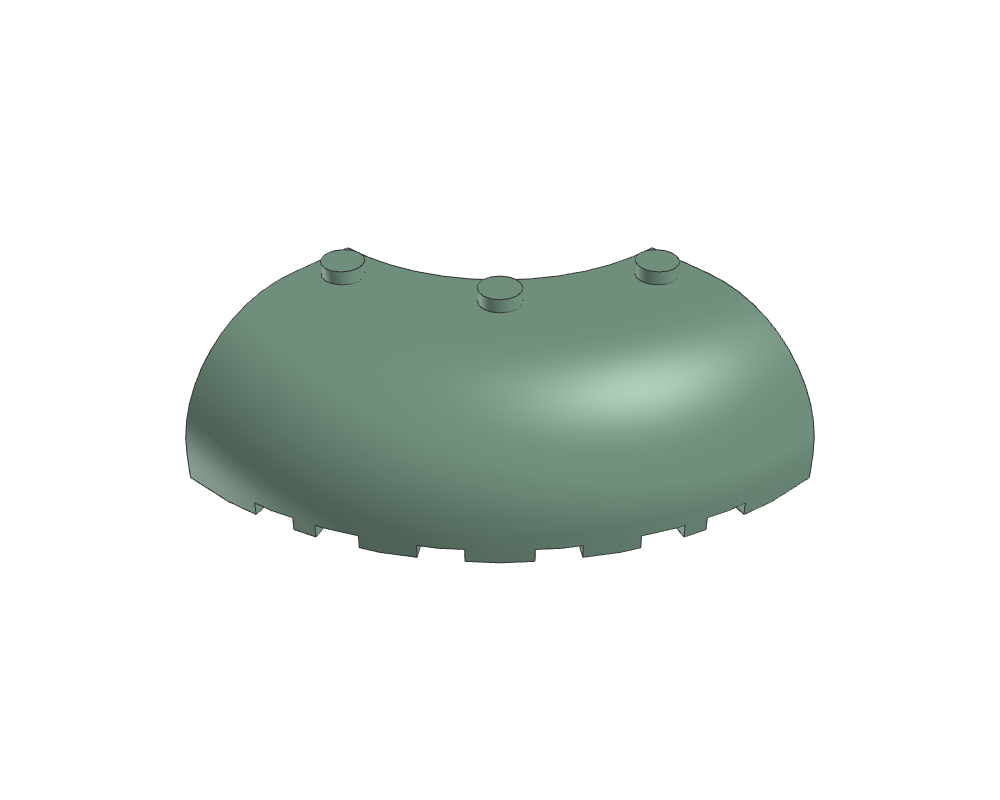
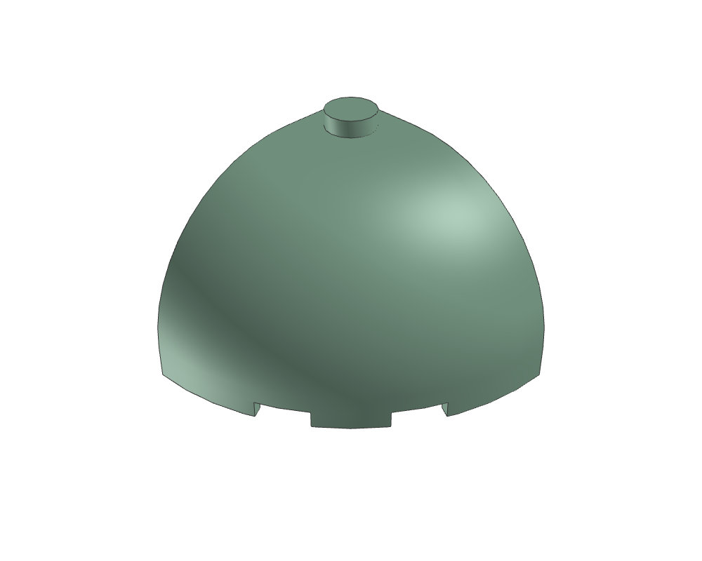
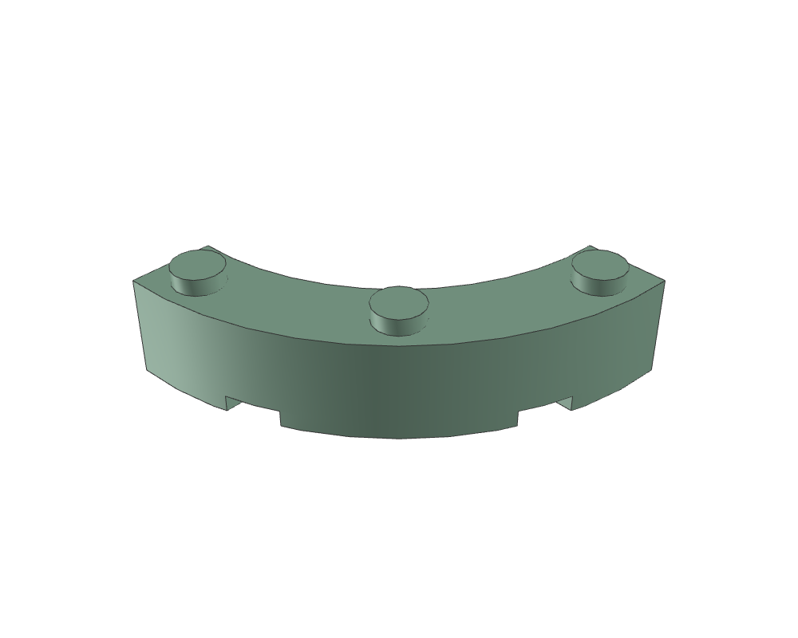

Brick 6 x 6 x 2 Corner Round with Curved Top
87559.dat87559.dat · 120 × 52 × 120 LDU
Inspect sourceActual library geometry. Each view is fitted independently: compare the listed dimensions, not image size. Bounds include studs and decoration; they are not stacking heights.

87559.dat87559.dat · 120 × 52 × 120 LDU
Inspect source
88293.dat88293.dat · 60 × 52 × 60 LDU
Inspect source
48092.dat48092.dat · 80 × 28 × 80.0005 LDU
Inspect source